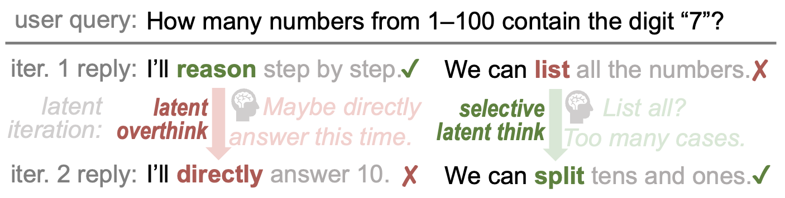
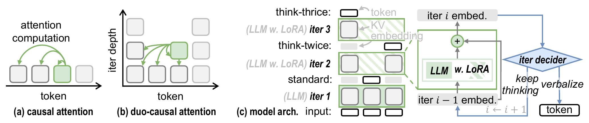

Overview
Looped transformers refine token predictions through multiple latent iterations — but iterating on every token wastes compute and risks latent overthinking, where correct predictions get flipped to errors.

The Discovery
We identify latent overthinking — where extra iterations hurt rather than help — and show that selective iteration unlocks significant untapped potential.
Architecture
Three architectural innovations enable efficient selective latent iteration.

TaH Overview. (a) Regular causal attention. (b) Duo-causal attention extends causality to two dimensions. (c) TaH selectively iterates or verbalizes tokens using LoRA adapters and a neural iteration decider.
2D causality across token positions and iteration depths — compatible with FlashAttention, no custom CUDA kernels needed
LoRA adapters at $d > 1$ shift the objective from next-token prediction to hard-token refinement with <3% extra parameters
Lightweight MLP that predicts which tokens need deeper thinking — trained to imitate the oracle policy in a stable two-stage scheme
Token embeddings enter the LLM backbone for a standard forward pass at depth $d=1$. The model uses its original pretrained weights $\theta$ without any LoRA adaptation. This first iteration produces standard next-token predictions — correct for ~93% of tokens.
Unlike standard causal attention (1D: attend to previous positions), duo-causal attention extends causality to two dimensions: tokens attend to both previous positions and shallower iteration depths. Formally: $X_{\le i}^{(\le d)} = \{x_j^{(k)} \mid j \le i, k \le d\}$.
At deeper iterations ($d > 1$), LoRA adapters activate on top of the shared backbone: $\theta_d = \theta + \Delta$. This shifts the model's objective from general next-token prediction to focused hard-token refinement. Residual connections across iterations simplify the refinement process.
A lightweight MLP ($\mathcal{I}_\phi$) reads concatenated hidden states from shallow, middle, and final LLM layers to predict a continuation probability $\hat{c}_i^{(d)} \in [0,1]$. If $\hat{c}_i^{(d)} < c_{\text{threshold}}$, the token verbalizes; otherwise it continues to the next iteration depth.
Experiments
Consistent gains across nine reasoning benchmarks at three model scales.
| Method | AIME25 | Olympiad | AMC23 | MATH500 | GSM8K | GPQA | MMLU | HE++ | MBPP++ | Average |
|---|---|---|---|---|---|---|---|---|---|---|
| Standard | 1.9 | 15.4 | 22.7 | 39.9 | 58.2 | 31.1 | 54.2 | 16.8 | 28.8 | 29.9 |
| SoftThink | 2.9 | 14.0 | 22.2 | 39.6 | 55.9 | 24.7 | 53.0 | 14.3 | 29.5 | 28.5 |
| Ouro | 2.1 | 14.2 | 19.7 | 37.4 | 56.6 | 35.4 | 54.0 | 18.9 | 23.5 | 29.1 |
| AlwaysThink | 1.3 | 12.6 | 21.9 | 37.8 | 52.6 | 30.8 | 51.4 | 9.1 | 13.8 | 25.7 |
| TaH | 2.1 | 19.1 | 24.1 | 46.2 | 63.6 | 29.0 | 56.4 | 21.6 | 33.9 | 32.9 |
| TaH+ | 4.6 | 20.6 | 24.7 | 51.8 | 67.6 | 31.3 | 59.0 | 22.0 | 35.1 | 35.2 |
Contributions
First to identify latent overthinking in looped transformers and propose selective iteration as a new design principle — iterate only on hard tokens for better quality and efficiency.
Duo-causal attention, depth-aware LoRA, and neural iteration decider — three components that natively support selective iteration with full training parallelism.
+5.3–6.2% accuracy gains across nine benchmarks with <3% extra parameters and only 1.07× average iteration depth — 93% of tokens need just one pass.
Citation
If you find TaH useful for your research, please consider citing our paper.